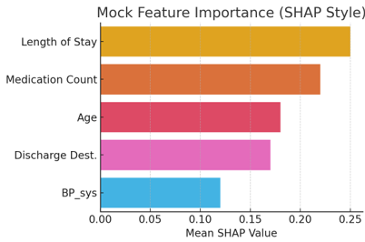

No Second Stay: Predicting 30-Day Hospital Readmissions
Supporting proactive discharge planning with interpretable machine learning
Key Features
- Used synthetic EHR data simulating demographics, comorbidities, vitals, and hospital outcomes.
- Applied Logistic Regression, Random Forest, and XGBoost models.
- Engineered a risk score and used SHAP for explainability.
- Top predictors: Length of Stay, Medication Count, Discharge Destination.
Technologies Used
Frontend
HTML5 CSS3 JavaScriptBackend
Python XGBoost SHAPLibraries
Pandas Scikit-learn Seaborn MatplotlibTools
Jupyter NotebooksVisuals

Figure: Risk score distribution and SHAP analysis highlight which features most strongly influence readmission predictions.
Outcomes & Insights
- Patients with a risk score above 75 were 3–4x more likely to be readmitted.
- SHAP improved clinical trust by showing how features influenced predictions.
- The model supports decision-making without replacing clinical judgment.
Recommendations & Ethics
- Use risk scores to trigger follow-up or social work consults before discharge.
- Avoid bias by carefully validating with real patient data before deployment.
- Maintain transparency—care teams should understand how the model works.